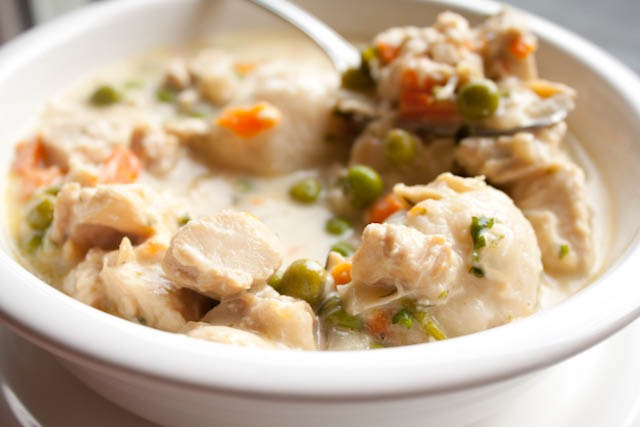

Chicken and Dumplings

Description
"This is an ode to Dolly Parton," says Rach. "One of her favorite dishes
is chicken and biscuits." Chicken and dumplings is similar except that
instead of baking the dough separately, you steam it in the pot with the
chicken. Just make sure you use a large pan with a lid because you need to
trap the steam to cook the dumplings. The recipe is super easy and
tasty—and super satisfying—so give it a try!
Ingredients
- 1 1/2 pounds chicken breast tenders
- 1 tablespoon olive oil, 1 turn of the pan
- 2 tablespoons butter
- 1 russet potato, peeled and diced
- 2 medium carrots, peeled and diced or thinly sliced
- 1 medium onion, chopped
- 1 rib celery, diced
- 1 bay leaf, fresh or dried
- Salt and freshly ground black pepper
- 1 teaspoon poultry seasoning, 1/3 palm full
- 2 tablespoons flour, a handful
-
1 quart chicken broth or stock, canned or paper container, preferred
brand Kitchen Basics
- 1 small box biscuit mix(preferred brand Jiffy Mix)
- 1/2 cup warm water
- 1 cup frozen green peas
- Handful flat-leaf parsley, chopped
Steps
- Dice tenders into bite size pieces and set aside. Wash hands.
-
Place a large pot on stove over medium high heat. Add oil, butter,
vegetables and bay leaf and cook 5 minutes, stirring frequently. Season
mixture with salt, pepper and poultry seasoning. Add flour to the pan
and cook 2 minutes. Stir broth or stock to the pot and bring to a boil.
Add chicken to the broth and stir.
-
Place biscuit mix in a bowl. Combine with 1/2 cup warm water and
parsley. Drop tablespoonfuls of prepared mix into the pot, spacing
dumplings evenly. Cover pot tightly and reduce heat to medium low. Steam
dumplings 8 to 10 minutes. Remove cover and stir chicken and dumplings
to thicken sauce a bit. Stir peas into the pan, remove chicken and
dumplings from heat and serve in shallow bowls.
Home